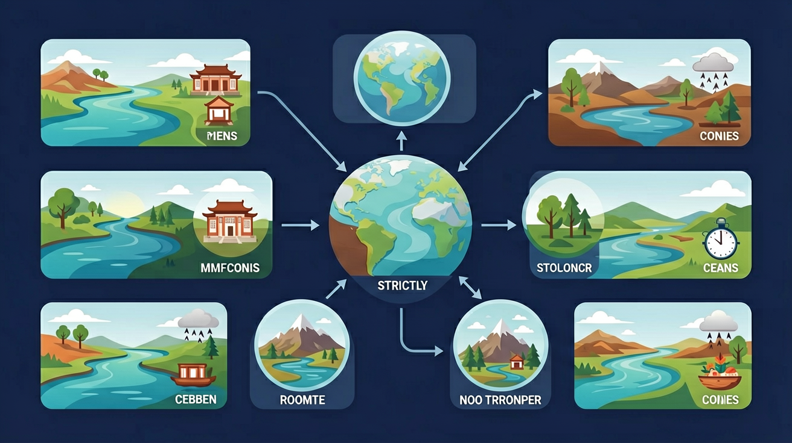

运用地图和相关资料，描述长江、黄河的特点，举例说明其对经济发展和人们生活的影响。

🎯 能说出中国主要河流的分布及特点
🎯 能判断不同地区湖泊的咸淡属性
🎯 能分析河流对人类活动的影响
❓ 为什么长江被称为'黄金水道'？
❓ 黄河的水为什么那么黄？
❓ 青海湖是咸水湖还是淡水湖？
学完这一课，这些问题你都能自信地回答。
我国最长的内流河是？
京杭运河连接的水系不包括？
中国河流湖泊是初中地理的重要内容。运用地图和相关资料，描述长江、黄河的特点，举例说明其对经济发展和人们生活的影响。
能够运用地图及其他地理工具，观察、描述地球表层陆地、海洋的基本面貌，说出地形、气候等自然环境要素的基本状况，以及自然环境要素对人们生产生活的影响。
点击时代/图层按钮切换地图；悬停边界，点击城市标记查看说明。
迁移任务：找一道与「中国河流湖泊」相关的练习题或生活情境，用本课方法完整解答一遍。
中国河流众多，外流河主要流入太平洋，长江、黄河是最重要的大河。河流水文特征受降水与地形影响。湖泊有淡水湖与咸水湖。防洪、灌溉、发电、航运是河流开发的重要主题。
每条大河记发源、流经、注入与一两个突出问题（如黄河泥沙、长江洪水）。
常见误区：常见误区是把黄河长江的问题张冠李戴，或只记长度不看治理。
长江最终注入？
1. 南水北调工程运用河流阶地知识规避沉降风险。东线工程利用京杭大运河故道时，工程师根据淮河下游阶地高程数据（如蚌埠段二级阶地海拔28-32米），将输水管道布设在稳定地层，避免地面沉降导致的管线破裂。
2. 长江电子航道图依赖水系形态参数。航道部门通过测量汉口段河曲率（1.78）、分汊系数（2.3）等数据，结合洞庭湖调蓄功能（削减洪峰流量1.2万m³/s），动态调整船舶通航规则。
3. 青海湖遥感监测揭示气候变化。中科院团队通过2000-2020年卫星影像分析，发现湖泊面积从4256km²增至4543km²，结合布哈河径流量增加12%的数据，验证青藏高原暖湿化趋势。
1. 问题：为什么长江三峡建成后，下游的鄱阳湖反而出现"汛期反枯"现象？分析思路：先对比三峡水库调度数据（汛前消落水位145m→175m），再考察长江与鄱阳湖水位关系（湖口站多年平均水位差变化），最后思考人工干预对自然水系互补机制的长期影响。
2. 问题：同样流经黄土高原，为何渭河含沙量（37kg/m³）远低于泾河（171kg/m³）？分析线索：从流域岩性差异（渭河流经秦岭变质岩区）、支流特性（泾河接纳马莲河红壤区）、以及人类活动（宝鸡峡灌区引水沉沙）三个维度建立比较框架。
先以1998年长江特大洪水切入，揭示我国河流"东多西少"的基本格局——400mm等降水量线大致对应外流区与内流区分界，这解释了为什么占国土面积64%的外流区集中了全国95%的河川径流。接着通过长江与黄河的对比，发现河流特性受气候与地形双重控制：长江流域降水充沛（年降水量1000mm以上）加上青藏高原的"水塔"作用，形成年径流量占全国36%的巨系统；而黄河虽流经中纬度但受季风影响弱（兰州站年降水量仅328mm），加上黄土高原侵蚀，造就了"水少沙多"的特殊性。最后聚焦人类活动影响，三峡水库的175米蓄水位使长江中游冲刷量增加2.4亿吨/年，而太湖流域的圩田系统导致水面率从12.6%降至7.4%，这些案例都说明现代治水必须统筹自然水循环与社会用水需求。从宏观格局到微观机制，中国河流的故事始终是自然地理与人文因素交织的生动教材。
1. 错误认为长江是中国最长的河流但水量不如黄河。实际上长江全长6300公里不仅是长度第一，年径流量达9513亿立方米（黄河仅580亿立方米）。这种错误源于学生将"母亲河"的情感认知与水文数据混淆，需强调黄河因流经干旱区而含沙量高但水量有限。
2. 混淆内流河与外流河的分界线。常见错误是将400mm等降水量线等同于季风区界线（实际为大兴安岭-阴山-贺兰山-巴颜喀拉山-冈底斯山）。根源在于忽视地形对水系的影响，如额尔齐斯河虽在西北却属北冰洋外流河，因其发源于阿尔泰山迎风坡。
3. 误判湖泊咸淡成因。有学生认为"所有内流区的湖都是咸水湖"，实际上青藏高原的冰川融水补给湖（如纳木错）矿化度仅1.7g/L，而干旱区的尾闾湖（如罗布泊）可达322g/L。需结合补给方式与蒸发量综合判断。
复制提示词到 AI 学伴，生成「中国河流湖泊」的示意图或结构提纲；也可以上传你手绘的示意图，请 AI 学伴点评。
复制后可粘贴到 AI 学伴继续对话。
关于外流河特征表述正确的是
给定三峡水库蓄水期（9-10月）、泄洪期（6-8月）的流量数据，对比同期鄱阳湖水位监测数据
关于中国河流湖泊的学习，哪种做法最科学？
选一个并查看反馈。
先独立作答，再点选项查看对错与错因。
鄱阳湖在长江水系中主要发挥的作用是
导致2022年鄱阳湖枯水期提前的首要原因是
下列湖泊与其特征匹配正确的是
长江中游河段因____作用形成众多曲流，在____（地形）区易形成牛轭湖。
答案：侧蚀|平原
侧蚀使河道弯曲，平原区流速慢易裁弯取直
我国____毫米等降水量线大致与内流区、外流区分界线重合，该线以西的____湖（例）属于内流湖。
答案：400|罗布泊
400mm是干旱/湿润分界，罗布泊是典型内流湖
✅ 内流河最终消失在沙漠或注入内陆湖
💡 混淆内流河与外流河概念
✅ 西北地区多咸水湖如青海湖
💡 忽视气候对湖水盐度的影响
口诀：长江长黄河黄，三江并流在西南
类比：河流就像人体血管，支流是毛细血管，干流是主动脉
（真题）关于长江中下游特征，正确的是：①含沙量小 ②有结冰期 ③汛期长 ④水流湍急
（迁移）某地湖泊冬季不结冰且水位稳定，最可能位于
（概念）调节河流径流量的关键措施是
点击节点跳转到对应章节；可切换布局。